library(tidyverse)
library(readr)
library(igraph)
library(sna)
library(ggplot2)
library(patchwork)This post will explore the Synthetic Mass network data in more detail.
Read in Data
pat_attr <- read_csv("post_one_data/pat_attr.csv",
col_types = cols(...1 = col_skip()))
pro_attr <- read_csv("post_one_data/pro_attr.csv",
col_types = cols(...1 = col_skip()))
encounters_cleaning <- read_csv("post_one_data//encounters_cleaning.csv",
col_types = cols(...1 = col_skip()))
encounter_attributes <- read_csv("post_one_data/encounter_attributes.csv",
col_types = cols(...1 = col_skip()))
encounters_el <- read_csv("post_one_data/encounters_el.csv",
col_types = cols(...1 = col_skip()))
encounters_st_3 <- read_csv("post_one_data/encounters.st.3.csv",
col_types = cols(...1 = col_skip()))
attribute_list <- read.csv("post_one_data/attribute_list.csv")Prep Data for Analysis
#combine pro and pat attr
pat_attr$type <- "PATIENT"
pro_attr$type <- "PROVIDER"
both_attr <- bind_rows(pat_attr, pro_attr)
head(both_attr)# A tibble: 6 × 7
NAME GENDER RACE MARITAL INCOME AGE type
<chr> <chr> <chr> <chr> <dbl> <dbl> <chr>
1 Avril120 Olson653 F white <NA> 482269 36 PATIENT
2 Norma469 Langosh790 F white <NA> 190464 25 PATIENT
3 Peggie783 Eichmann909 F white <NA> 78997 21 PATIENT
4 Ashlie138 Williamson769 F white M 6472 37 PATIENT
5 Christiane220 Ankunding277 F white <NA> 141475 24 PATIENT
6 Dione665 O'Kon634 F white M 482269 36 PATIENTCreate bipartite network with attributes
encounters.st.3 <- network(encounters_el,
directed = FALSE,
bipartite = TRUE,
matrix.type = "edgelist",
vertex.attr = attribute_list)
encounters.st.3 Network attributes:
vertices = 374
directed = FALSE
hyper = FALSE
loops = FALSE
multiple = FALSE
bipartite = 121
total edges= 437
missing edges= 0
non-missing edges= 437
Vertex attribute names:
AGE GENDER INCOME MARITAL NAME RACE type vertex.names X
Edge attribute names:
COUNT head(network.vertex.names( encounters.st.3))[1] "Akiko835 Larkin917" "Anneliese170 Berge125"
[3] "Annice210 McClure239" "Anthony633 Renner328"
[5] "Arleen939 Kling921" "Ashlie138 Williamson769"Graphs
Graphs with sna
# load the sna library to get the gplot() function
library( sna )
# set the seed to reproduce the plot layout
set.seed( 507 )
# execute the plot
gplot(
encounters.st.3,
gmode = "twomode", # indicate it is two modes
usearrows = FALSE, # turn off the arrowheads
vertex.cex=2, # size the nodes
label.cex=1.2, # size the labels
main="Bipartite Graph of Encounters using SNA" # add a title
)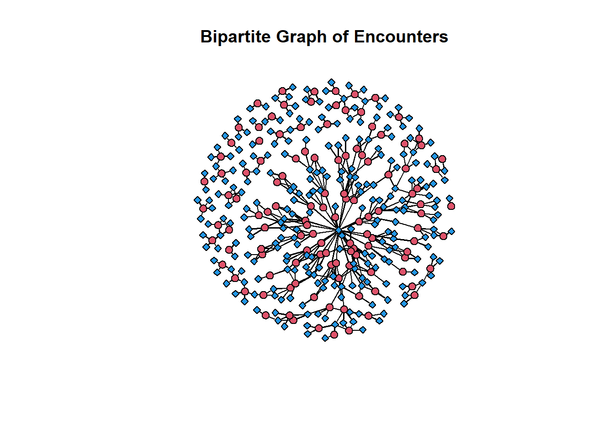
incidence_graph <- graph_from_biadjacency_matrix(encounters.st.3)detach("package:sna")Graphs with igraph
vertex_colors <- ifelse(attribute_list$GENDER == "F", "blue", "magenta")
V(incidence_graph)$shape <- ifelse(V(incidence_graph)$type, "square", "circle")
# Define edge colors based on COUNT attribute
edge_colors <- ifelse(encounters_el$COUNT < 5, "yellow",
ifelse(encounters_el$COUNT >= 5 & encounters_el$COUNT <= 19, "lightblue", "red"))
# Check if the length of edge_colors matches the number of edges
if (length(edge_colors) == ecount(incidence_graph)) {
# Set edge attributes based on counts
E(incidence_graph)$color <- edge_colors
} else {
print("Length of edge_colors does not match the number of edges in the graph.")
}
E(incidence_graph)$color <- edge_colors
# set the seed to reproduce the plot layout
set.seed( 235 )
plot(incidence_graph,
layout = layout.fruchterman.reingold,
vertex.label.dist = 2,
vertex.size = 3,
vertex.color = vertex_colors,
edge.label = NA,
vertex.label = NA,
vertex.label.cex = 0.2,
main = "Patient Provider Incidence Graph")
# Define legend for vertex colors
legend("bottomright",
legend = c("Female", "Male"), # You can customize these labels
fill = c("magenta", "blue"), # Fill colors corresponding to vertex colors
title = "Nodes: Gender") # Legend title
# Define legend for vertex shapes
legend("topright",
legend = c("Patient", "Provider"), # You can customize these labels
pch = c(1, 0), # Point shapes corresponding to vertex shapes
title = "Nodes: Who") # Legend title
# Define legend for edge colors
legend("topleft",
legend = c("1-4", "5-19", "20+"), # You can customize these labels
col = c("yellow", "lightblue", "red"), # Line colors corresponding to edge colors
lwd = 2, # Line width
title = "Edges: # of Visits") # Legend title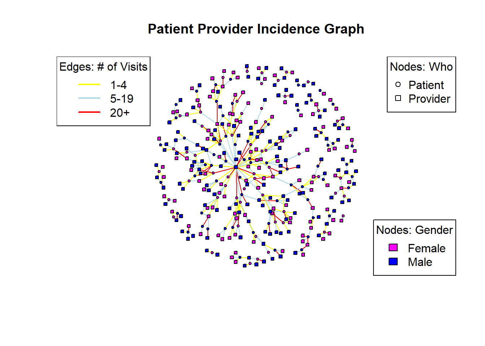
#Calculating centrality
types <- V(incidence_graph)$type
deg<- degree(incidence_graph)
bet <- betweenness(incidence_graph)
clos <- closeness(incidence_graph)
eig <- eigen_centrality(incidence_graph)$vector
const <- constraint(incidence_graph)
cent_df <- data.frame(types, deg, bet, clos, eig, const)
head(cent_df[order(cent_df$deg, decreasing = TRUE),], 10) types deg bet clos eig
Ted955 Reilly981 TRUE 28 27013.6588 0.0012239902 1.00000000
Timmy68 Nolan344 FALSE 7 885.6299 0.0007002801 0.02480592
Trula820 Johns824 FALSE 7 6649.9824 0.0010000000 0.20635920
Chun678 Hirthe744 FALSE 6 1404.0134 0.0009578544 0.24432907
Corey514 Gaylord332 FALSE 6 2402.5000 0.0009578544 0.19651997
Dennis979 Dickens475 FALSE 6 1785.4929 0.0009652510 0.22004854
Enola75 Tromp100 FALSE 6 758.6271 0.0009560229 0.29716393
Jacqualine965 Aufderhar910 FALSE 6 3265.0333 0.0010080645 0.22137300
Jed345 Muller251 FALSE 6 3019.5333 0.0010080645 0.22693121
Mamie949 Leannon79 FALSE 6 799.1374 0.0009560229 0.28361363
const
Ted955 Reilly981 0.03571429
Timmy68 Nolan344 0.14285714
Trula820 Johns824 0.14285714
Chun678 Hirthe744 0.16666667
Corey514 Gaylord332 0.16666667
Dennis979 Dickens475 0.16666667
Enola75 Tromp100 0.16666667
Jacqualine965 Aufderhar910 0.16666667
Jed345 Muller251 0.16666667
Mamie949 Leannon79 0.16666667V(incidence_graph)$size <- degree(incidence_graph)
# set the seed to reproduce the plot layout
set.seed( 235 )
plot(incidence_graph,
layout = layout.fruchterman.reingold,
vertex.color = vertex_colors,
edge.color = "gray",
edge.label = NA,
vertex.label = NA,
main = "Patient Provider Incidence Graph with Degree Information")
# Define legend for vertex colors
legend("bottomright",
legend = c("Female", "Male"), # You can customize these labels
fill = c("magenta", "blue"), # Fill colors corresponding to vertex colors
title = "Nodes: Gender") # Legend title
# Define legend for vertex shapes
legend("topright",
legend = c("Patient", "Provider"), # You can customize these labels
pch = c(1, 0), # Point shapes corresponding to vertex shapes
title = "Nodes: Who") # Legend title
# Define legend for edge colors
legend("topleft",
legend = "Vertex Size",
pch = 1,
pt.cex = seq(0.5, 3, length.out = 5),
title = "Degree")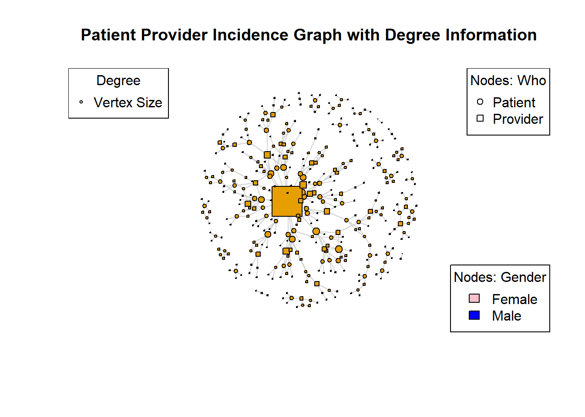
Here we can see there is one Provider that sees the most patients, with degree centrality = 28. The next largest degree centrality are in the 5 to 7 range and the majority of those nodes are patients.
V(incidence_graph)$size <- closeness(incidence_graph)
# set the seed to reproduce the plot layout
set.seed( 235 )
plot(incidence_graph,
layout = layout.fruchterman.reingold,
vertex.color = vertex_colors,
edge.color = "gray",
edge.label = NA,
vertex.label = NA,
main = "Patient Provider Incidence Graph with Closeness Information")
# Define legend for vertex colors
legend("bottomright",
legend = c("Female", "Male"), # You can customize these labels
fill = c("magenta", "blue"), # Fill colors corresponding to vertex colors
title = "Nodes: Gender") # Legend title
# Define legend for vertex shapes
legend("topright",
legend = c("Patient", "Provider"), # You can customize these labels
pch = c(1, 0), # Point shapes corresponding to vertex shapes
title = "Nodes: Who") # Legend title
# Define legend for edge colors
legend("topleft",
legend = "Vertex Size",
pch = 1,
pt.cex = seq(0.5, 3, length.out = 5),
title = "Closeness")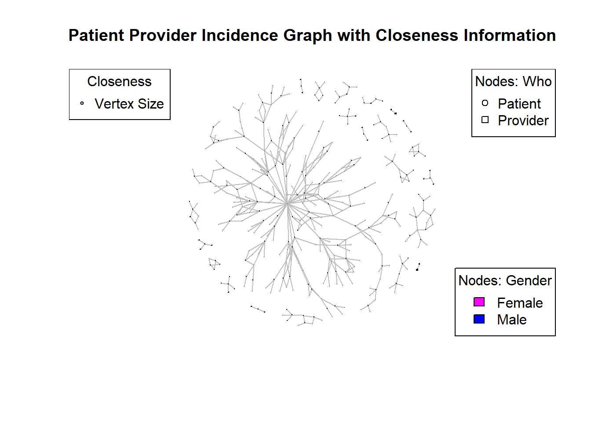
Here we see two of the dyads on the outer right side of this incidence graph have the largest closeness score. This is because their network is complete (they are both connected to one another).
Triad Dyad Census
triads_incidence<-igraph::triad_census(incidence_graph)Warning in igraph::triad_census(incidence_graph): At
vendor/cigraph/src/misc/motifs.c:1140 : Triad census called on an undirected
graph. All connections will be treated as mutual.triads_incidence [1] 8487860 0 159964 0 0 0 0 0 0
[10] 0 1300 0 0 0 0 0dyad.census(incidence_graph)Warning: `dyad.census()` was deprecated in igraph 2.0.0.
ℹ Please use `dyad_census()` instead.Warning: `dyad_census()` requires a directed graph.$mut
[1] 437
$asym
[1] 0
$null
[1] 69314transitivity(incidence_graph)[1] 0transitivity(incidence_graph, type = "global")[1] 0mean_distance(incidence_graph)[1] 6.166661Component Structure and Membership
First, let’s look at the network component structure. This gives a list with: membership by node, size of each component, and the total number of components.
names(components(incidence_graph))[1] "membership" "csize" "no" components(incidence_graph)$no # number of components[1] 22components(incidence_graph)$csize #Size of each component [1] 249 8 18 4 6 10 3 5 3 4 5 9 6 7 2 3 5 10 7
[20] 3 5 2degree.wt=strength(incidence_graph)Graph Cluster
glou <- graph_from_data_frame(encounters_el[, 1:2], directed = FALSE)
lou <- cluster_louvain(glou)
set.seed(1)
plot(lou, glou, vertex.label = NA, vertex.size=2)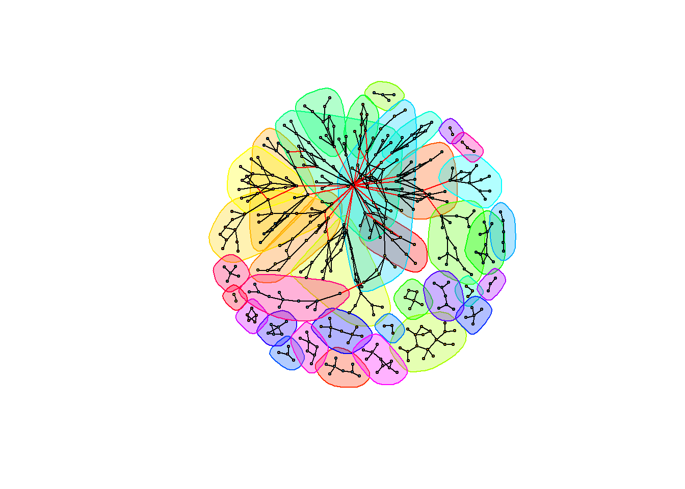
set.seed(1)
plot(lou, glou, vertex.label = NA, vertex.size=5, mark.groups = NULL)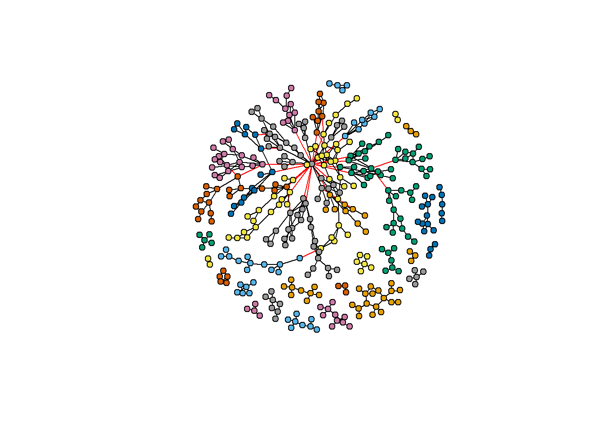
set.seed(1)
plot(lou, glou, vertex.label = NA, vertex.size = 5, mark.border = NA)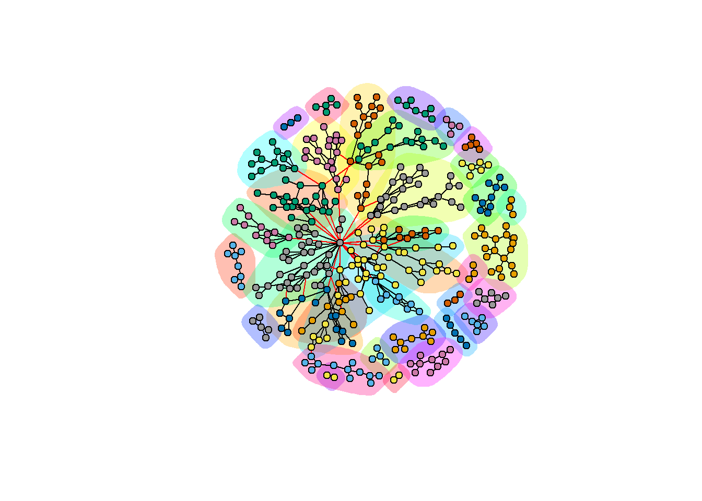
glou <- graph_from_data_frame(encounters_el[, 1:2], directed = FALSE)
walktrap <- cluster_leading_eigen(glou)
set.seed(1)
plot(walktrap, glou, vertex.label = NA, vertex.size=2)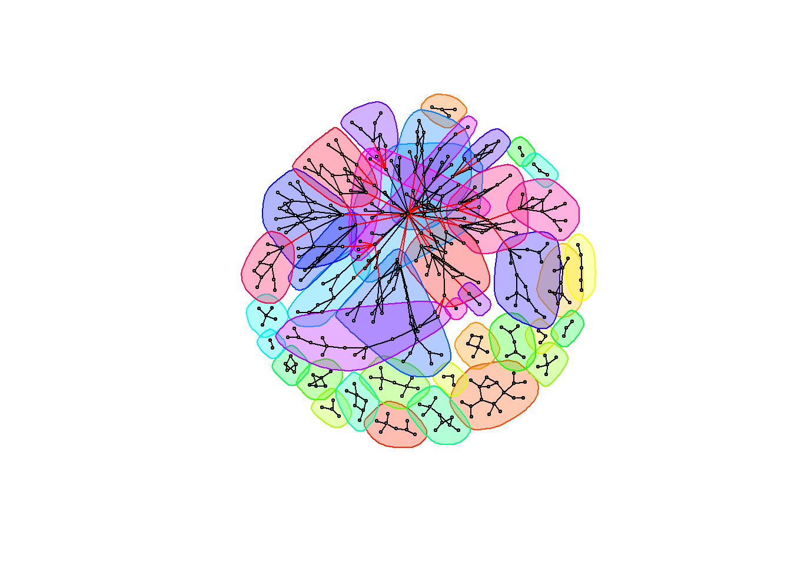
set.seed(1)
plot(walktrap, glou, vertex.label = NA, vertex.size=5, mark.groups = NULL)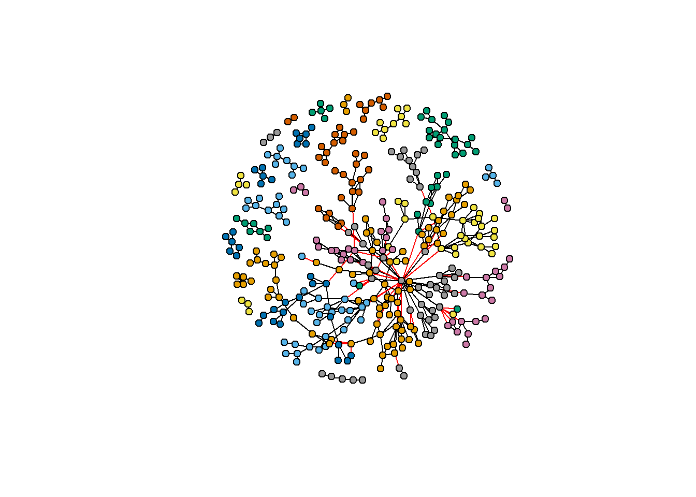
set.seed(1)
plot(walktrap, glou, vertex.label = NA, vertex.size = 5, mark.border = NA)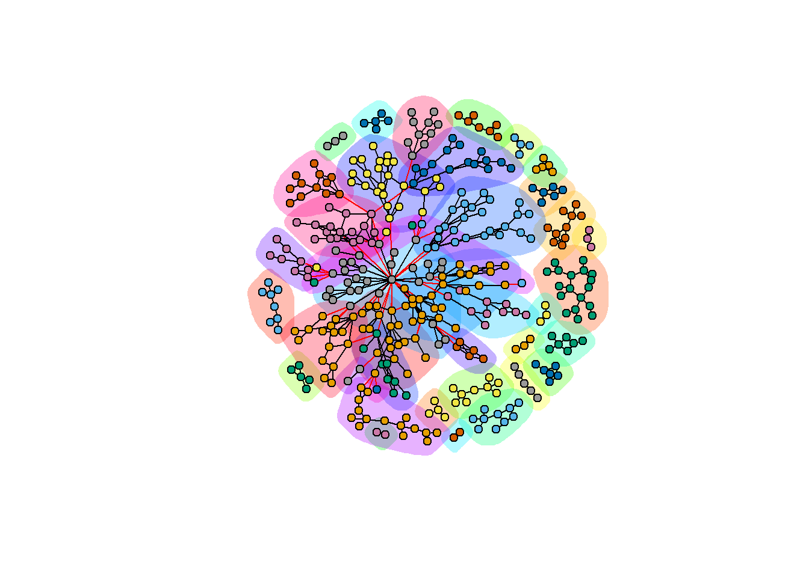
Graph Providers and Patients Separately
projected_graph <- bipartite_projection(incidence_graph)
#providers
head(projected_graph$proj2)6 x 253 sparse Matrix of class "dgCMatrix" [[ suppressing 253 column names 'Emilio417 Barton704', 'Frederic454 Larkin917', 'Jim478 Goyette777' ... ]]
Emilio417 Barton704 . 1 1 1 1 . . . . . . . . . . . . . . . . . . . . . . . .
Frederic454 Larkin917 1 . 1 2 1 . . . . . . . . . . . . . . . . . . . . . . . .
Jim478 Goyette777 1 1 . 1 1 . . . . . . . . . . . . . . . . . . . . . . . .
Kirby843 McKenzie376 1 2 1 . 1 . . . . . . . . . . . . . . . . . . . . . . . .
Ted955 Reilly981 1 1 1 1 . . . . 1 2 . . 1 2 1 1 1 1 . 1 . . . . . 1 . . 3
Althea11 Ankunding277 . . . . . . 1 1 . . . . . . . . . . . . . . . . . . . . .
Emilio417 Barton704 . . . . . . . . . . . . . . . . . . . . . . . . . . . . .
Frederic454 Larkin917 . . . . . . . . . . . . . . . . . . . . . . . . . . . . .
Jim478 Goyette777 . . . . . . . . . . . . . . . . . . . . . . . . . . . . .
Kirby843 McKenzie376 . . . . . . . . . . . . . . . . . . . . . . . . . . . . .
Ted955 Reilly981 . . 2 . . . . . . 2 . . . 1 . . . 1 1 . . . . . . . . . .
Althea11 Ankunding277 . . . . . . . . . . . . . . . . . . . . . . . . . . . . .
Emilio417 Barton704 . . . . . . . . . . . . . . . . . . . . . . . . . . . . .
Frederic454 Larkin917 . . . . . . . . . . . . . . . . . . . . . . . . . . . . .
Jim478 Goyette777 . . . . . . . . . . . . . . . . . . . . . . . . . . . . .
Kirby843 McKenzie376 . . . . . . . . . . . . . . . . . . . . . . . . . . . . .
Ted955 Reilly981 . . . 1 1 5 1 2 1 . 1 1 1 1 . . 1 2 . 2 1 1 2 2 . 1 . . .
Althea11 Ankunding277 . . . . . . . . . . . . . . . . . . . . . . . . . . . . .
Emilio417 Barton704 . . . . . . . . . . . . . . . . . . . . . . . . . . . . .
Frederic454 Larkin917 . . . . . . . . . . . . . . . . . . . . . . . . . . . . .
Jim478 Goyette777 . . . . . . . . . . . . . . . . . . . . . . . . . . . . .
Kirby843 McKenzie376 . . . . . . . . . . . . . . . . . . . . . . . . . . . . .
Ted955 Reilly981 . . 1 . 1 . . . 1 1 4 2 3 . . . . . . 3 . 1 1 1 1 . . . 1
Althea11 Ankunding277 . . . . . . . . . . . . . . . . . . . . . . . . . . . . .
Emilio417 Barton704 . . . . . . . . . . . . . . . . . . . . . . . . . . . . .
Frederic454 Larkin917 . . . . . . . . . . . . . . . . . . . . . . . . . . . . .
Jim478 Goyette777 . . . . . . . . . . . . . . . . . . . . . . . . . . . . .
Kirby843 McKenzie376 . . . . . . . . . . . . . . . . . . . . . . . . . . . . .
Ted955 Reilly981 1 1 1 1 1 . . 1 1 1 1 1 1 1 2 2 1 . . . 1 . . . . . . . .
Althea11 Ankunding277 . . . . . . . . . . . . . . . . . . . . . . . . . . . . .
Emilio417 Barton704 . . . . . . . . . . . . . . . . . . . . . . . . . . . . .
Frederic454 Larkin917 . . . . 1 . . . . . . . . . . . . . . . . . . . . . . . .
Jim478 Goyette777 . . . . . . . . . . . . . . . . . . . . . . . . . . . . .
Kirby843 McKenzie376 . . . . 1 . . . . . . . . . . . . . . . . . . . . . . 1 .
Ted955 Reilly981 . . . 1 2 1 1 . . . . . . . . . 1 1 1 1 1 1 . . . . . . 1
Althea11 Ankunding277 . . . . . . . . . . . . . . . . . . . . . . . . . . . . .
Emilio417 Barton704 . . . . . . . . . . . . . . . . . . . . . . . . . . . . .
Frederic454 Larkin917 . . . . . . . . . . . . . . . . . . . . . . . . . . . . .
Jim478 Goyette777 . . . . . . . . . . . . . . . . . . . . . . . . . . . . .
Kirby843 McKenzie376 . . . . . . . . . . . . . . . . . . . . . . . . . . . . .
Ted955 Reilly981 . . . . . . . . . . . . . . . . . . . . . . . . . . 1 . .
Althea11 Ankunding277 . . . . . . . . . . . . . . . . . . . . . . . . . . . . .
Emilio417 Barton704 . . . . . . . . . . . . . . . . . . . . . . . . . . . . .
Frederic454 Larkin917 . . . . . . . . . . . . . . . . . . . . . . . . . . . . .
Jim478 Goyette777 . . . . . . . . . . . . . . . . . . . . . . . . . . . . .
Kirby843 McKenzie376 . . . . . . . . . . . . . . . . . . . . . . . . . . . . .
Ted955 Reilly981 . . . . 1 . . . . . . . . . . . . . . . . . . . . . . . .
Althea11 Ankunding277 . . . . . . . . . . . . . . . . . . . . . . . . . . . . .
Emilio417 Barton704 . . . . . . . . . . . . . . . . . . . . .
Frederic454 Larkin917 . . . . . . . . . . . . . . . 1 . . . . .
Jim478 Goyette777 . . . . . . . . . . . . . . . . . . . . .
Kirby843 McKenzie376 . . . . . . . . . . . . . . . 1 . . . . .
Ted955 Reilly981 1 . . . . . . . 1 1 . . . 1 . . . . . . .
Althea11 Ankunding277 . . . . . . . . . . . . . . . . . . . . .provider_communities <- cluster_louvain(projected_graph$proj2)
provider_membership <- membership(provider_communities)
head(provider_membership,10) Emilio417 Barton704 Frederic454 Larkin917 Jim478 Goyette777
1 1 1
Kirby843 McKenzie376 Ted955 Reilly981 Althea11 Ankunding277
1 1 2
Jerrell6 Rippin620 Linette249 Runte676 Irene779 Garza151
2 2 3
Randy380 Bergstrom287
3 #patients
head(projected_graph$proj1)6 x 121 sparse Matrix of class "dgCMatrix" [[ suppressing 121 column names 'Akiko835 Larkin917', 'Anneliese170 Berge125', 'Annice210 McClure239' ... ]]
Akiko835 Larkin917 . . 1 . 1 . . . . . . . . . . 1 . . . . . 1 . 1 . 1 . 1
Anneliese170 Berge125 . . . . . . . . . . . . . . . . . . . . 1 . . . . . . .
Annice210 McClure239 1 . . . 1 . . . . . . . . . . 1 . . . . . 1 . 1 . 1 . 1
Anthony633 Renner328 . . . . . . . . . . . . . . . . . . . . . . . . . . . .
Arleen939 Kling921 1 . 1 . . . . . 2 1 . . . . . 1 . . . . . 1 . 1 1 1 . 2
Ashlie138 Williamson769 . . . . . . . . . . . . . . . 1 . . . . . . . . . . . .
Akiko835 Larkin917 1 . . . . . 1 1 . . . . . 1 . . . 1 . 1 . 1 1 1 . 1 . .
Anneliese170 Berge125 . . . . . . . . . . . . . . . . . . . . . . . . . . . .
Annice210 McClure239 1 . . . . . 1 1 . . . 1 . 1 . . . 1 . 1 . 2 1 1 . 1 . .
Anthony633 Renner328 . . . . . . . . . . . . . . . . . . . . . . . . . . . .
Arleen939 Kling921 1 . . . . . 1 1 . . . . . 1 . . . 1 . 1 . 1 1 1 . 1 . .
Ashlie138 Williamson769 . . . . . . . . . . . . . . . . . . . . . . . . . . . .
Akiko835 Larkin917 . . 1 . . . . 1 1 1 . . . 1 1 . . . . . . . . . . . . .
Anneliese170 Berge125 . . . . . . . . . . . . . . . . . . . . . . . . . . . .
Annice210 McClure239 . . 1 . . . . 1 1 1 . . . . 1 . . . . . . . . . . . . .
Anthony633 Renner328 . . . . . . . . . . . . 1 . . . . . . . . . . . . . . .
Arleen939 Kling921 . . 1 . . . . 1 1 1 . . . . 1 . . . . . . . . . . . . .
Ashlie138 Williamson769 . . . . . . . . . . . . . . . . . . . . . . . 1 . . . .
Akiko835 Larkin917 1 . . . . 1 . . . . . . . . . . . . . . . 1 . . . . . 1
Anneliese170 Berge125 . . . . . . . . . . . . . . . . . . . . . . . . . . . .
Annice210 McClure239 1 . . . . 1 . . . . . . . . . 1 . . . . . 1 . . . . . 1
Anthony633 Renner328 . . . . . . . . . . . . . . . . . . . . . . . . . . . .
Arleen939 Kling921 1 . . . . 1 . . . . . . . . . . . . . . . 1 . . . . . 1
Ashlie138 Williamson769 . . . . . . . . . . . . . . . . . . . . . . . . . 1 . 1
Akiko835 Larkin917 . 1 . 2 . . . . .
Anneliese170 Berge125 . . . . . . . . .
Annice210 McClure239 . 1 . . . . . . .
Anthony633 Renner328 . 1 . . . . . . .
Arleen939 Kling921 . 1 . . 2 . . . .
Ashlie138 Williamson769 . . . . . . . . .patient_communities <- cluster_louvain(projected_graph$proj1)
patient_membership <- membership(patient_communities)
head(patient_membership, 10) Akiko835 Larkin917 Anneliese170 Berge125 Annice210 McClure239
1 2 3
Anthony633 Renner328 Arleen939 Kling921 Ashlie138 Williamson769
1 4 5
Avril120 Olson653 Basil991 Hilll811 Benjamin360 Hintz995
5 6 4
Brendan864 MacGyver246
4 plot(projected_graph$proj1, vertex.color = membership(patient_communities),
vertex.label = NA, edge.arrow.size = 0.5)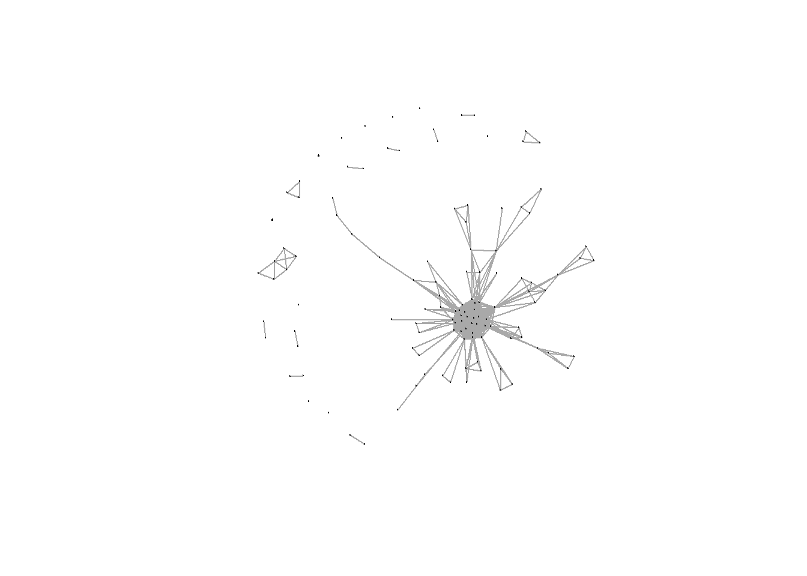
plot(projected_graph$proj2, vertex.color = membership(provider_communities),
vertex.label = NA, edge.arrow.size = 0.5)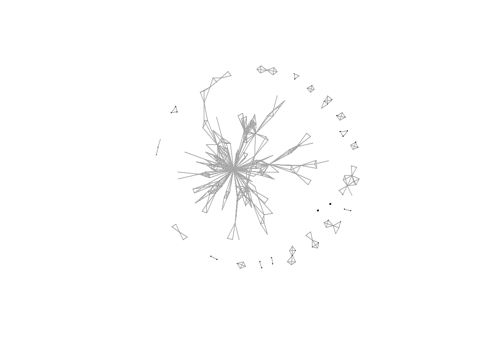